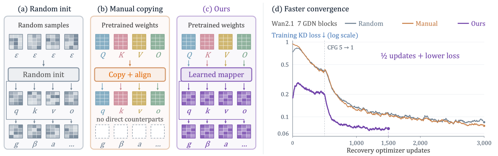
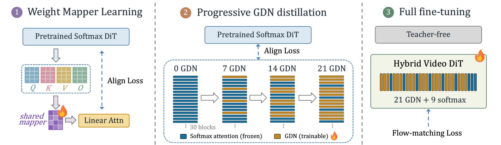
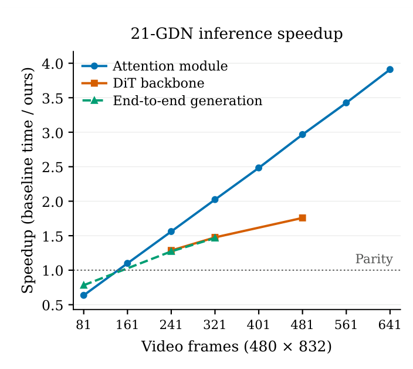

Random initialization
Starts the replacement from scratch and asks recovery to reconstruct the pretrained functionality.
0.09483 block NMSE ↓
Better linearization starts with better initialization.
Learn how to transform pretrained attention weights into linear-attention modules, then recover video generation with fewer updates.
Stronger block alignment than random initialization and manual copying on both Wan2.1 and Wan2.2.
Controlled initialization ablations · Table 2 82.16Within 0.33 points of the reported Wan2.1 reference, with 14 of 30 attention blocks converted.
LinMorph-14 · 50 sampling steps · Table 3 1.47×1,604.7 → 1,094.0 seconds for 321 frames at 480 × 832 on an A800-80GB.
LinMorph-21 · one timed pair · Table 15Recovery-update counts exclude mapper fitting. The quality reference is a published result; the speed result uses a separate long-video setting. See the experiments below.
Post-hoc linearization is an attractive way to accelerate pretrained Video Diffusion Transformers (Video DiTs), yet existing methods largely treat the quality loss induced by attention replacement as a recovery problem. We show that a more fundamental bottleneck lies upstream: initialization. Random initialization discards pretrained knowledge, whereas manual weight reuse transfers it through rigid and incomplete source–target correspondences.
We introduce LinMorph, which recasts Video DiT linearization as a learnable softmax-to-linear weight transformation problem. Instead of copying predefined counterparts, LinMorph learns a cross-parameter morphism that lets each target Gated DeltaNet (GDN) parameter draw jointly from pretrained query, key, value, and output projections, including for parameters with no direct softmax counterpart. A single morphism is shared across layers and learned through local teacher alignment, while producing layer-specific initializations from their respective pretrained weights.
The resulting weights are then materialized as independent GDN modules for progressive distillation and joint recovery. Since the morphism operates in weight space rather than token space, it can be learned on short, low-resolution clips and directly reused at larger video scales. Across pretrained Video DiTs, LinMorph enables markedly faster recovery and better final generation quality than random initialization and heuristic weight reuse. Results show that efficient linearization depends not only on how a converted model is recovered, but critically on how pretrained knowledge is transferred before recovery.
Replacing softmax attention changes the operator and its parameterization. A GDN module has update gates, decay terms, short convolutions, and normalization parameters that do not have direct softmax counterparts. How pretrained knowledge enters these new parameters determines the starting point for recovery.
LinMorph learns a cross-parameter transformation: each target can draw jointly from the pretrained Q/K/V/O projections. A shared rule produces different initializations for different layers because their source weights differ.
Starts the replacement from scratch and asks recovery to reconstruct the pretrained functionality.
Reuses predefined counterparts, with incomplete coverage of the target operator’s parameters.
Learns source mixing and target-specific construction, then refines the result with a shared residual.
Initialization fidelity before downstream recovery, after mapper fitting. Table 1: 64 HQ videos, 30 blocks, five timesteps; teacher-forced local block evaluation. Lower normalized mean squared error (NMSE) means closer alignment to the teacher. Section 3.2

The learned correspondences matter. Permuting the learned source assignments for GDN-specific parameters increases block NMSE by 171.44%, even while preserving coefficient-vector norms. This intervention supports learning how information should transfer across parameter types. Figure 4 and Section 3.1

The controlled experiments hold the target architecture and recovery recipe fixed within each backbone. LinMorph reaches lower block error in half as many recovery updates as the longer-trained random and manual baselines.
| Initialization | Updates | Block NMSE ↓ |
|---|---|---|
| Random | 3,000 | 0.1168 |
| Manual | 3,000 | 0.0905 |
| LinMorph | 1,500 | 0.0525 |
| Initialization | Updates | Block NMSE ↓ |
|---|---|---|
| Random | 2,500 | 0.2148 |
| Manual | 2,500 | 0.1872 |
| LinMorph | 1,250 | 0.1476 |
At the same 1,500-update budget on Wan2.1, LinMorph lowers block NMSE by 61.4% versus manual copying and 65.5% versus random initialization. Its final-output NMSE is 0.0101, compared with 0.0230 and 0.0250, respectively.
These comparisons measure recovery updates, excluding the separate mapper-fitting stage. Wan2.2 uses a separately fitted mapper variant. The tables measure prediction fidelity, not final video benchmark scores. Table 2 and Section 4.2
The transformation acts on model weights, so its parameterization depends on the architecture rather than the number of video tokens. At a fixed architecture, the same fitted mapper and residual can be reused at a larger resolution and duration without further optimization.
Block NMSE: 0.01121
Block NMSE: 0.01418
Cross-layer sharing provides another form of reuse: one learned transformation serves participating layers while each layer receives its own materialized GDN weights. After materialization, the replacements are independently trainable and no mapper execution is added to inference.
Cross-scale values are for the base + residual mapper in Table 13: 64 paired OpenVid video indices, five timesteps, and 30 blocks, for 9,600 teacher-forced local comparisons per setting. They measure initialization alignment before recovery, rather than generated-video quality. Appendix C.4.1
LinMorph-14 reaches 82.16 on VBench and 55.11 on VBench-2.0 after 4,000 optimizer updates of final full-model fine-tuning. Its VBench total is within 0.33 points of the published Wan2.1 reference. LinMorph-21 retains an 81.85* VBench total while replacing 70% of the attention blocks. The LinMorph results use 50-step sampling.
| Model | GDN blocks | VBench ↑ | VBench-2.0 ↑ |
|---|---|---|---|
| Wan2.1 reference† | 0 / 30 | 82.49 | 56.02 |
| LinMorph-14 | 14 / 30 | 82.16 | 55.11 |
| LinMorph-21 | 21 / 30 | 81.85* | 52.13 |
Reported in Table 3 of the paper. Each model uses the same checkpoint across both benchmarks: microstep 8,000 for LinMorph-14 and 40,000 for LinMorph-21. *The 21-GDN VBench result includes the temporal-flickering prompt correction described in Appendix C.6. †The Wan2.1 values are published reference scores reproduced in the paper, rather than a matched-budget experiment. Evaluation settings and reference provenance are detailed in the paper.
On an A800-80GB, the 21-GDN model achieves 1.47× end-to-end speedup at 321 frames, reducing generation time from 1,604.7 to 1,094.0 seconds. Attention-module speedup reaches 3.91× at 641 frames.
480 × 832, BF16, batch size 1, Wan2.1 with FlashAttention-2 as baseline. Attention and backbone measurements use three paired rounds; end-to-end uses one pair. At 81 frames, the measured end-to-end ratio is 0.78×; the reported acceleration is for longer videos. See Section 4.5 and Appendix C.7.

Training and inference code are available in the GitHub repository. Download the recovered DiT checkpoints from Hugging Face, together with the original Wan2.1 text encoder, tokenizer, and VAE required for inference.